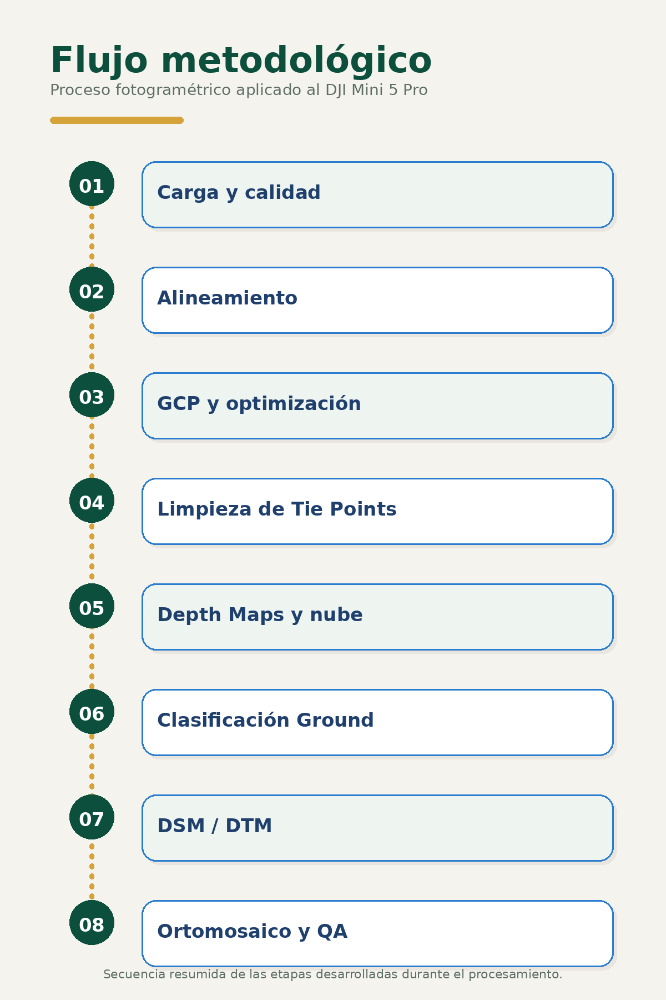
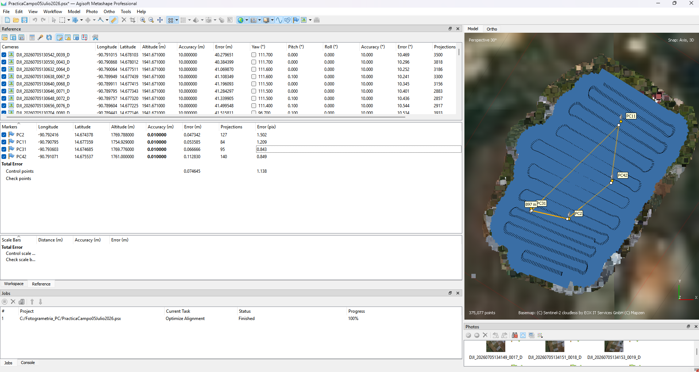
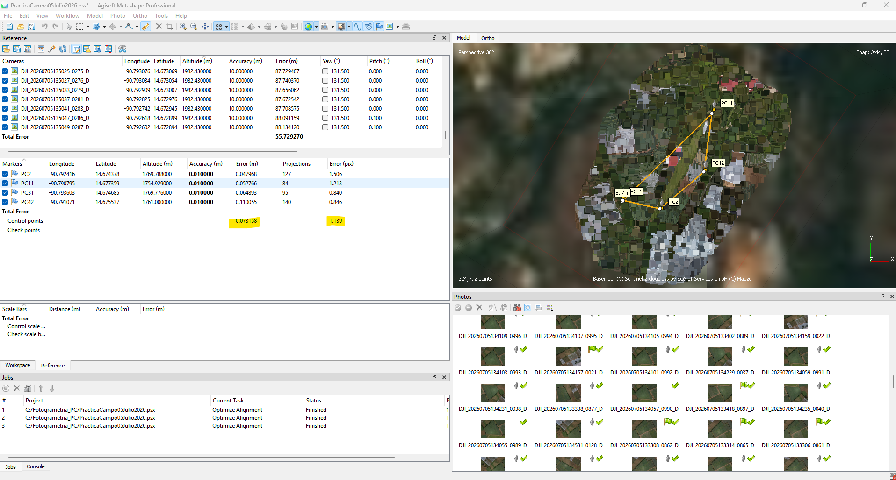
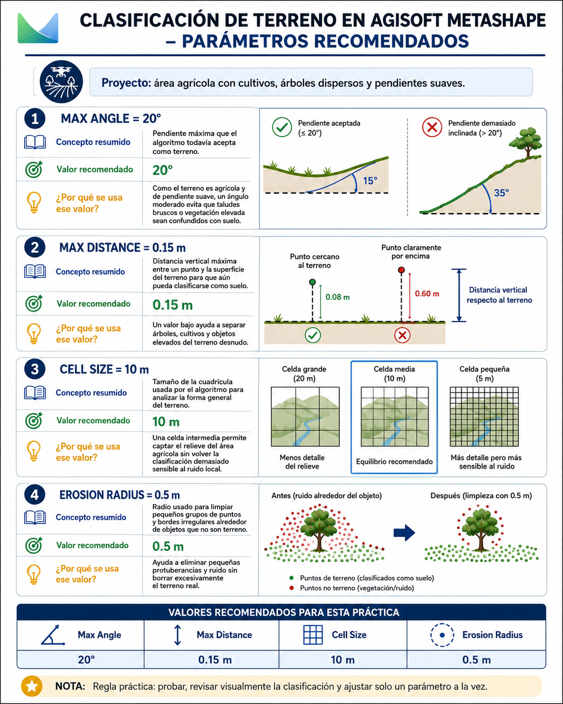
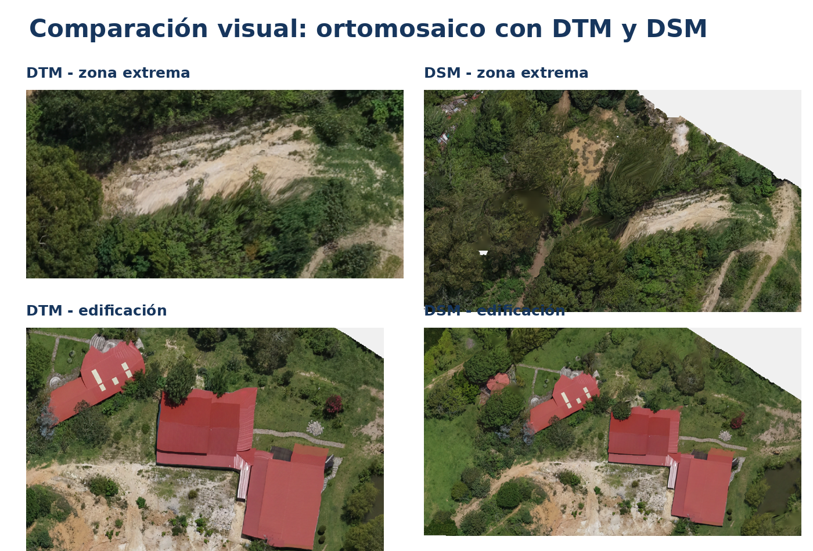

01Metodología y datos de entrada
Definición del flujo, organización del proyecto y control de los insumos antes del procesamiento.
Ver detalle del paso →Una memoria técnica visual del procesamiento de 1,258 imágenes del DJI Mini 5 Pro: alineamiento, control GNSS, nube de puntos, modelos de elevación y ortomosaicos.
Explorar el procesoVer conclusionesLa página principal resume la finalidad y los resultados de cada fase. El botón de cada sección abre una página independiente con los parámetros, capturas y análisis detallado.

01Definición del flujo, organización del proyecto y control de los insumos antes del procesamiento.
Ver detalle del paso → 02
02Orientación del 100 % de las imágenes y construcción de una nube dispersa continua.
Ver detalle del paso →
03Incorporación de cuatro GCP con una geometría adecuada para controlar el área central de interés.
Ver detalle del paso →
04Depuración progresiva mediante Reconstruction Uncertainty, Projection Accuracy y Reprojection Error.
Ver detalle del paso → 05
05Reconstrucción densa en calidad Medium y filtrado Mild, conservando más de 21.6 millones de puntos.
Ver detalle del paso →
06Separación geométrica de puntos Ground para construir una representación del terreno desnudo.
Ver detalle del paso → 07
07Construcción de dos superficies complementarias en WGS 84 / UTM zona 15N.
Ver detalle del paso →
08Evaluación del efecto de usar DTM o DSM como superficie de ortorrectificación.
Ver detalle del paso → 09
09Síntesis de decisiones, resultados, controles de calidad y recomendaciones reutilizables.
Ver detalle del paso →En la zona central ambos modelos produjeron resultados útiles; sin embargo, el DSM conservó mejor la geometría de árboles, cubiertas e infraestructura agrícola, sobre todo en sectores con objetos elevados.
Los valores empleados responden a este bloque fotogramétrico. La enseñanza principal es revisar la respuesta de los datos, justificar cada parámetro y validar visualmente el producto antes de avanzar.